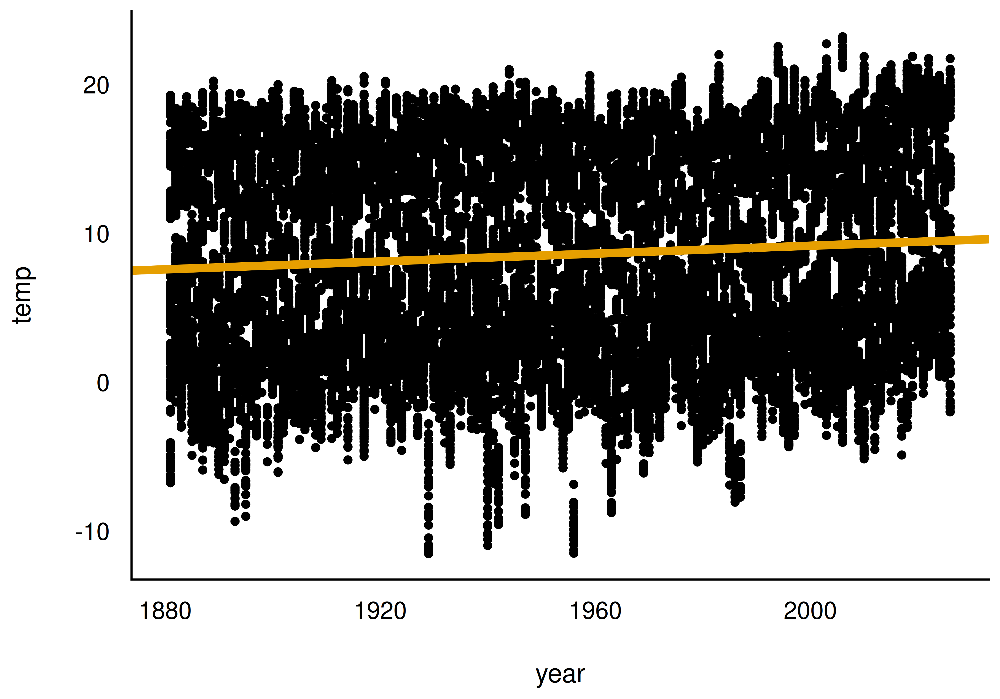
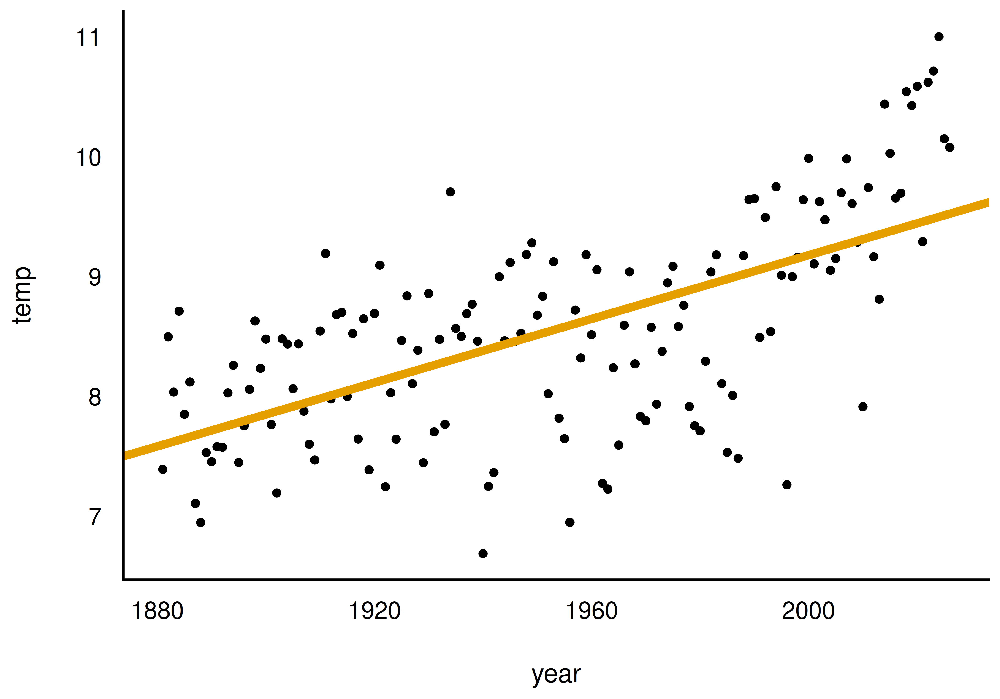
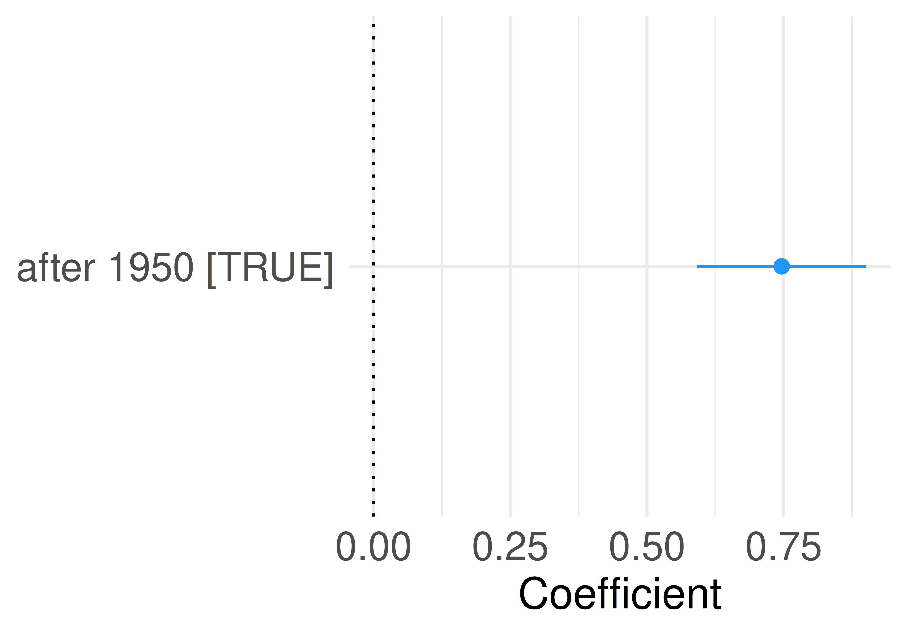
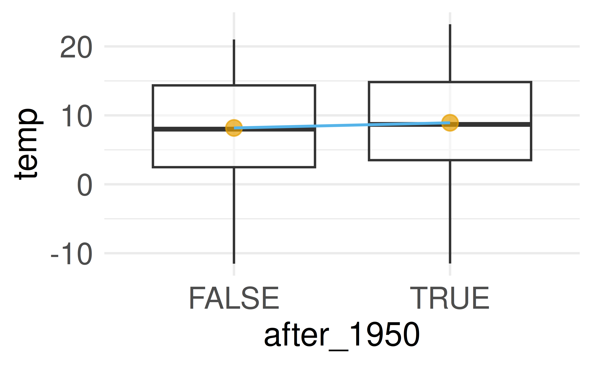
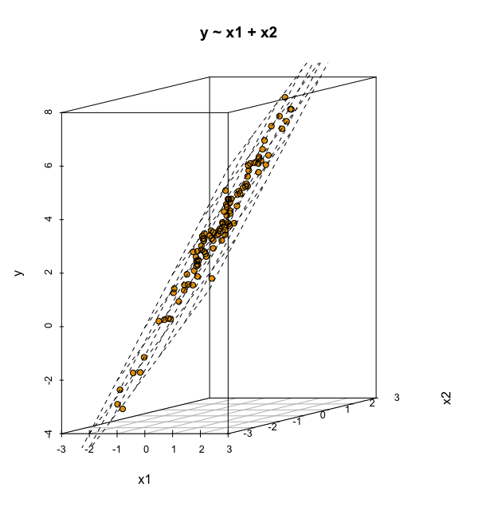
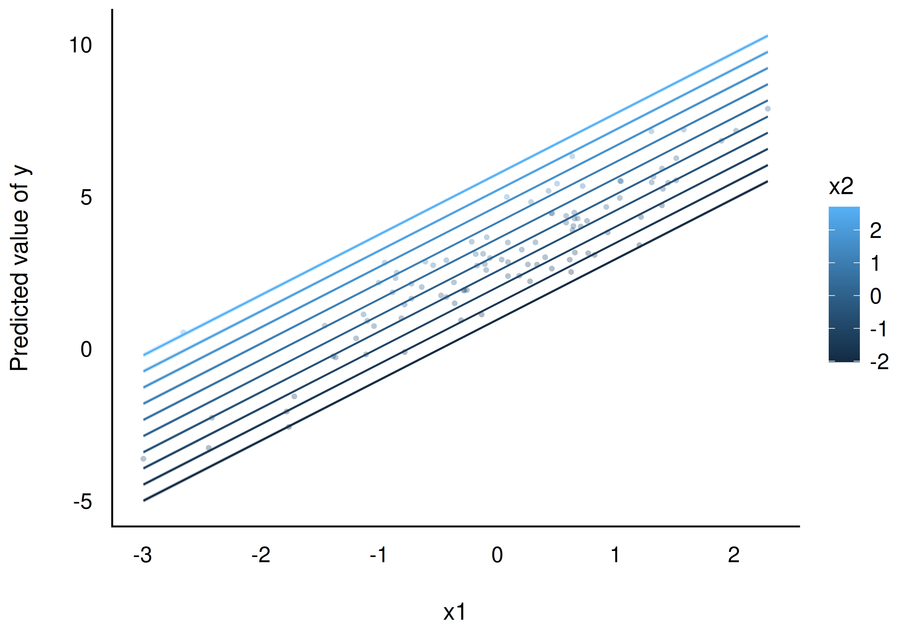
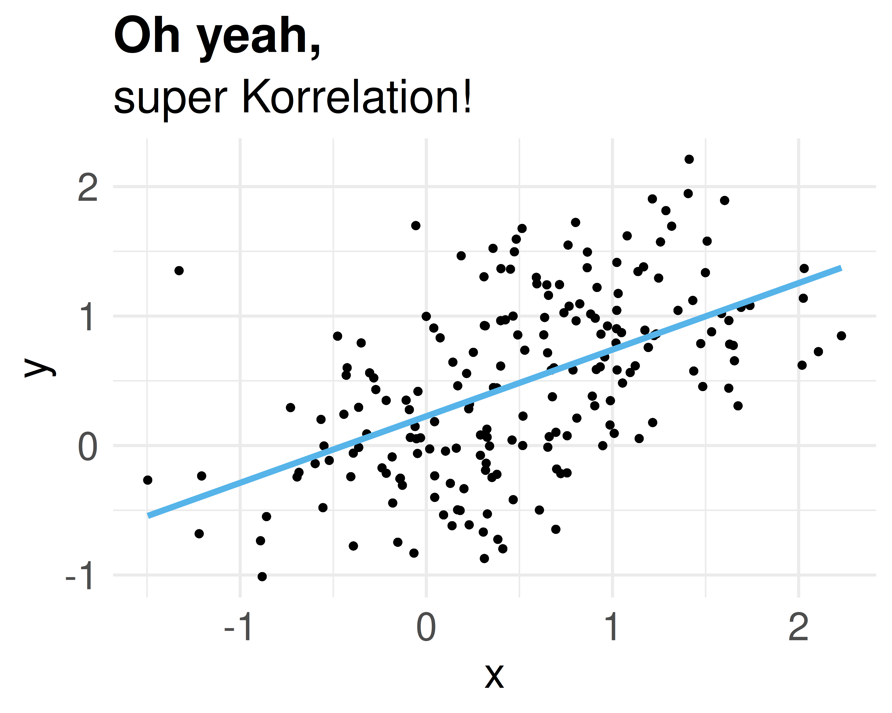
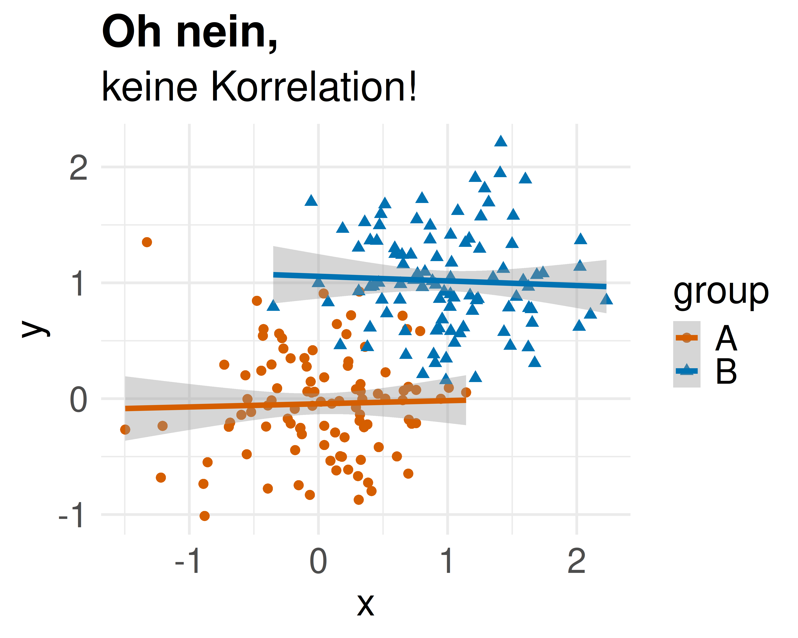
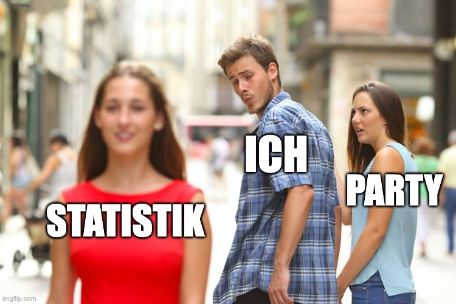

Statistik1
Geradenmodelle 2
Einstieg
Lernziele
- Sie können Regressionsmodelle für Forschungsfragen mit binärer, nominaler und metrischer UV erläutern und in R anwenden.
- Sie können Interaktionseffekte in Regressionsmodellen erläutern und in R anwenden.
- Sie können den Anwendungszweck von Zentrieren und z-Transformationen zur besseren Interpretation von Regressionsmodellen erläutern und in R anwenden.
Einstieg
Benötigte R-Pakete & Daten
- Pakete:
tidyverse(Wickham et al., 2019),easystats(Lüdecke et al., 2022),yardstick(Kuhn et al., 2024), optionalggpubr(Kassambara, 2023) - Daten: die bekannten Mariokart-Daten und neu die Wetterdaten des Deutschen Wetterdienstes (DWD) (2025a, 2025b)
- Temperatur in Grad Celsius, Niederschlag (
precip) in mm pro Quadratmeter
Einstieg
Forschungsbezug: Gläserne Kunden
Wie gut kann man Ihre Persönlichkeit vorhersagen?
Kosinski et al. (2013) zeigten, wie gut Persönlichkeitszüge anhand von Facebook-Likes vorhergesagt werden können — sexuelle Orientierung, Ethnie, Alter, Geschlecht, uvm.
Das eingesetzte Modell: ein lineares Modell, wie in diesem Kapitel behandelt.
{kind=link}
Forschungsbezug: Gläserne Kunden
Wetter in Deutschland
Metrische UV: Temperatur im Zeitverlauf
Forschungsfrage: Um wie viel ist die Temperatur in Deutschland pro Jahr gestiegen (letzte ca. 100 Jahre)?
Laut Modell wurde es pro Jahr im Schnitt um 0.01 °C wärmer — pro Jahrzehnt 0.1 °C, pro Jahrhundert 1 °C.
Wetter in Deutschland
Punkt- und Bereichsschätzung
- Punktschätzung: der “Best-Guess” für einen Koeffizienten in der Population (Spalte
Coefficient) - Bereichsschätzung (Konfidenzintervall, CI): ein Bereich plausibler Werte, z. B. mit 95 % Sicherheit
Definition: Konfidenzintervall
Ein Konfidenzintervall gibt einen Schätzbereich plausibler Werte für einen Populationswert an, auf Basis der Schätzung, die uns die Stichprobe liefert.
Je schmaler das CI, desto genauer wird der Effekt geschätzt.
Wetter in Deutschland
Temperaturverlauf visualisiert


Wetter in Deutschland
UV zentrieren: Warum?
Der Achsenabschnitt (\(\beta_0\)) ist der \(Y\)-Wert an der Stelle \(x=0\). In den Wetterdaten wäre year = 0 Christi Geburt — sinnlos zu extrapolieren!

Sinnvoller: einen Referenzwert festlegen, z. B. 1950 — oder gleich den Mittelwert der UV abziehen (Zentrierung).
Wetter in Deutschland
Zentrierte Variable im Modell
- Die Steigung bleibt durch das Zentrieren unverändert — nur der Achsenabschnitt ändert sich.
- Das mittlere Jahr der Messreihe ist 1951: Im Jahr 1951 lag die mittlere Temperatur bei ca. 8.5 °C.
- Regressionsgleichung:
temp_pred = 8.49 + 0.01*year_c
Das Modell erklärt aber nur wenig Varianz — die Jahreszeit spielt z. B. eine viel größere Rolle als die Jahreszahl.
Wetter in Deutschland
Definition: Binäre Variable
Definition: Binäre Variable
Eine binäre UV, auch Indikatorvariable oder Dummyvariable genannt, hat nur zwei Ausprägungen: 0 und 1.
Beispiele: weiblich (0/1), oder after_1950 (1 für Jahre nach 1950, sonst 0).
Forschungsfrage: War es in der zweiten Hälfte des 20. Jahrhunderts im Schnitt wärmer als davor?
Wetter in Deutschland
Binäre UV in R erzeugen
TRUE/FALSE werden von R automatisch als 1/0 verstanden — eine logische Variable ist bereits binär.
Wetter in Deutschland
Modell mit binärer UV


Es wurde ein gutes halbes Grad wärmer nach 1950 — die Modellgüte ist aber gering.
Wetter in Deutschland
Interpretation: binäre UV
{kind=link}
- Mittelwert der 1. Gruppe (bis 1950): Achsenabschnitt (\(\beta_0\))
- Mittelwert der 2. Gruppe (nach 1950): Achsenabschnitt (\(\beta_0\)) + Steigung (\(\beta_1\))
Wetter in Deutschland
Modellwerte konkret
Für die Modellwerte \(\color{#56B4E9}{\hat{y}}\) gilt:
- Bis 1950: \(\color{#56B4E9}{\hat{y}} = \color{#D55E00}{\beta_0} = 17.7\)
- Nach 1950: \(\color{#56B4E9}{\hat{y}} = \color{#D55E00}{\beta_0} + \color{#0072B2}{\beta_1} = \color{#D55E00}{17.7} + \color{#0072B2}{0.6} = 18.3\)
\(\beta_1\) lässt sich bei nominalen/binären UV als Schalter verstehen, bei metrischen UV als Dimmer.
Wetter in Deutschland
Nominale UV: mehrstufig
Forschungsfrage: Gibt es substanzielle Temperaturunterschiede zwischen den Bundesländern?
Eine nominale UV mit \(k\) Stufen wird von lm in \(k-1\) binäre Variablen umgewandelt. Bei character-Variablen wählt R den alphabetisch ersten Wert als Referenzgruppe.
- Mittelwert 1. Gruppe: Achsenabschnitt (\(\beta_0\))
- Mittelwert 2. Gruppe: \(\beta_0\) + Steigung der 1. Gerade (\(\beta_1\))
- Mittelwert 3. Gruppe: \(\beta_0\) + Steigung der 2. Gerade (\(\beta_2\)), usw.
Wetter in Deutschland
Interpretation: nominale UV
{kind=link}
Da Baden-Württemberg alphabetisch das erste Bundesland ist, wird es als Referenzgruppe gewählt — ihr Mittelwert entspricht dem Achsenabschnitt.
Wetter in Deutschland
Faktorvariablen
factor()wandelt eine numerische Variable in eine nominalskalierte Variable um.- Faktorstufen werden bei
factor-Variablen mitgespeichert (beicharacternicht) — auch nach dem Filtern. - Referenzgruppe ändern:
relevel(month_factor, ref = "7")
Wetter in Deutschland
Niederschlag nach Monat
{kind=link}
Referenzgruppe Januar; die 11 übrigen Monate werden im Modell als Unterschied zu Januar ausgegeben.
Wetter in Deutschland
Definition: Multiple Regression
Definition: Multiple Regression
Eine multiple Regression beinhaltet mehr als eine X-Variable. Die Modellformel spezifiziert man so:
\(y \sim x_1 + x_2 + \ldots + x_n\)
Hat man mehrere UV, trennt man sie mit einem Plus-Zeichen — dieses hat keine arithmetische Funktion, sondern bedeutet “und noch folgende UV”.
Wetter in Deutschland
Multiple Regression: Beispiel
Interpretation der Koeffizienten:
- Achsenabschnitt (\(\beta_0\)): Niederschlag im Referenzjahr 1951, Referenzmonat Januar — 57 mm
- \(\beta_1\) (
year_c): +0.03 mm Niederschlag pro Jahr (im Referenzmonat) - \(\beta_2\) (
month_factor7): im Juli knapp 25 mm mehr als im Referenzmonat Januar
Regressionsgleichung: precip_pred = 56.94 + 0.03*year_c + 24.37*month_factor_7
Wetter in Deutschland
Vorhersage mit predict
Statt die Regressionsgleichung von Hand auszurechnen, lässt man R rechnen:
Alle Koeffizienten beziehen sich auf die AV unter der Annahme, dass alle übrigen UV den Wert Null (bzw. Referenzwert) haben.
Wetter in Deutschland
Parallele Regressionsgeraden
{kind=link}
Ein additives Modell (y ~ x1 + x2) zwingt die Regressionsgeraden der Gruppen zur Parallelität.
Wetter in Deutschland
Definition: Interaktionseffekt
Definition: Interaktionseffekt
Einen Interaktionseffekt von x1 und x2 kennzeichnet man in R mit dem Doppelpunkt-Operator:
y ~ x1 + x2 + x1:x2
In Worten: y wird modelliert als eine Funktion von x1 und x2 und dem Interaktionseffekt von x1 mit x2.
Wetter in Deutschland
Nicht-parallele Regressionsgeraden
{kind=link}
Sind die Regressionsgeraden mehrerer Gruppen nicht parallel, liegt ein Interaktionseffekt vor.
Wetter in Deutschland
Interaktion interpretieren
- Der Interaktionsterm (
year_c × month_factor[7]) zeigt, wie unterschiedlich sich die Niederschlagsmenge zwischen den Monaten über die Jahre verändert. - Pro Jahr ist die Zunahme im Juli um 0.20 mm geringer als im Referenzmonat Januar → für Juli insgesamt:
0.13 - (-0.20) = 0.07 - Gleichung:
precip_pred = 56.91 + 0.13*year_c + 24.37*month_factor_7 - 0.20*year_c:month_factor_7
Wichtig
Der Achsenabschnitt gibt den Wert der AV an unter der Annahme, dass alle UV den Wert Null aufweisen.
Das \(R^2\) steigt durch den Interaktionsterm hier nur geringfügig — im Zweifel gilt: so einfach wie möglich modellieren.
Wetter in Deutschland
Modelle mit vielen UV
Zwei metrische UV: die Regressionsebene
Ein Modell mit zwei metrischen UV lässt sich im 3D-Raum als Regressionsebene visualisieren.


Modelle mit vielen UV
Viele UV ins Modell?
Grundsätzlich können viele UV in ein Modell aufgenommen werden — Richtlinien (Gelman et al., 2021):
- Variablen aufnehmen, die vermutlich Ursachen der Zielvariable sind.
- Bei UV mit starken Effekten: auch deren Interaktionseffekte erwägen.
- Präzise geschätzte UV (schmales CI) eher im Modell belassen.
Geht es um Theorieprüfung statt Modellgüte: nur die von der Theorie geforderten UV aufnehmen.
Modelle mit vielen UV
Fallbeispiel zur Prognose
Prognose des Verkaufspreises
Auftrag: den Verkaufspreis von Mariokart-Spielen möglichst exakt vorhersagen.
Vorgehen: Datensatz zufällig in Train-Sample (70 %, zum Modellieren) und Test-Sample (30 %, zur Güteprüfung) aufteilen.
Fallbeispiel zur Prognose
Modell “all-in”: alle Variablen rein?
Der Punkt (.) steht für “alle Variablen außer total_pr”.
Vorsicht
Zu gut, um wahr zu sein — und es ist zu gut, um wahr zu sein: Das Modell hat einfach den Auktionstitel Title auswendig gelernt.
Idiografische Informationen wie Namen/Titel helfen nicht, allgemeine Muster zu erkennen.
Fallbeispiel zur Prognose
Vorhersagefehler bei neuen Titeln
Kommt im Test-Sample eine Ausprägung von title vor, die im Train-Sample nicht existierte, scheitert predict. Nominalskalierte UV mit vielen Ausprägungen sind problematisch und führen oft zu Overfitting.
Fallbeispiel zur Prognose
Modell “all-in” ohne Titelspalte
Vorhersagegüte im Test-Sample (mit dem Paket yardstick):
Mittlerer Vorhersagefehler (RMSE): ca. 13 Euro. \(R^2\) im Test-Sample: nur 17 %.
Fallbeispiel zur Prognose
Overfitting
Die Modellgüte im Test-Sample ist (leider) oft geringer als im Train-Sample — die Trainings-Güte ist mitunter übermäßig optimistisch. Dieses Phänomen heißt Overfitting (Gelman et al., 2021).
Deshalb: vor dem Ausliefern von Vorhersagen die Modellgüte immer an einem neuen Datensatz (Test-Sample) prüfen.
rsq() (aus yardstick) berechnet die Modellgüte für beliebige Vorhersagen — im Gegensatz zu r2(), das nur im Train-Sample funktioniert.
Fallbeispiel zur Prognose
Praxisbezug
Kundenabwanderung vorhersagen
Ein Anwendungsbeispiel moderner Datenanalyse: die Vorhersage, welche Kunden “abwanderungsgefährdet” sind (customer churn).
Lalwani et al. (2022) nutzten u. a. lineare Regression zur Vorhersage abgewanderter Kunden und berichten eine Genauigkeit von über 80 % im besten Modell.
Praxisbezug
Wie man mit Statistik lügt
Pinguine drehen auf
Ein Forscherteam untersucht Schnabellänge und Schnabeltiefe bei \(n = 344\) Pinguinen der Palmer Station, Antarktis.

Wie man mit Statistik lügt
Analyse 1: Gesamtdaten
{kind=link}
Klarer Fall: ein negativer Zusammenhang. Nobelpreis-verdächtig — oder?
Wie man mit Statistik lügt
Analyse 2: Aufteilung in Arten
{kind=link}
Gleiche Daten, gegenteiliges Ergebnis! Ohne Hintergrundwissen ist nicht entscheidbar, welche Analyse “richtig” ist.
Wie man mit Statistik lügt
Kausale Interpretation: Vorsicht
Wichtig
Interpretiere Modellkoeffizienten nur kausal, wenn du ein Kausalmodell hast.


Kippt das Vorzeichen eines Effekts durchs Hinzufügen einer Variable, spricht man von Simpsons Paradox (Gelman et al., 2021).
Wie man mit Statistik lügt
Deskriptiv statt kausal
Kennt man die kausale Struktur nicht, sollte man Modellkoeffizienten nur deskriptiv interpretieren — z. B. “Wo es viele Störche gibt, gibt es auch viele Babys” (Matthews, 2000).
Unser Gehirn ist auf kausales Denken geprägt: Deskriptive Befunde werden daher immer wieder unzulässig kausal interpretiert.
Wie man mit Statistik lügt
Was war noch mal das Erfolgsgeheimnis?
Dranbleiben zahlt sich aus

Wenn Sie an der Statistik dranbleiben, wird sich der Erfolg einstellen.
Was war noch mal das Erfolgsgeheimnis?
Zusammenfassung
- Metrische UV: Achsenabschnitt oft sinnlos ohne Zentrierung der UV
- Binäre/nominale UV: \(\beta_0\) = Mittelwert der Referenzgruppe, \(\beta_1, \beta_2, \ldots\) = Differenz zu weiteren Gruppen
- Multiple Regression: mehrere UV, additiv verbunden mit
+ - Interaktion (
x1:x2): Effekt einer UV hängt vom Wert einer anderen UV ab — Regressionsgeraden nicht mehr parallel - Train-/Test-Sample: Modellgüte immer an neuen Daten prüfen — Vorsicht vor Overfitting
- Kausale Interpretation von Koeffizienten nur mit einem Kausalmodell — sonst droht Simpsons Paradox
Literaturhinweise
Referenzen

Statistik1 — Geradenmodelle 2